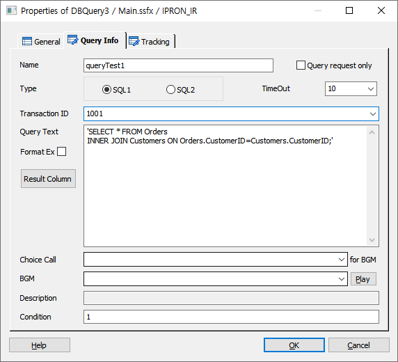
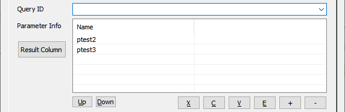
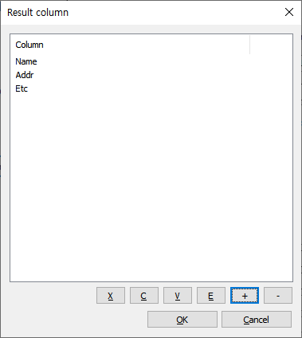
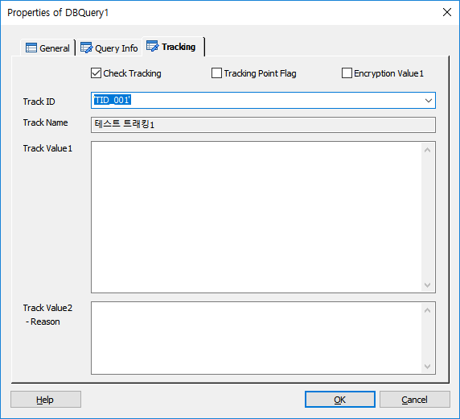

외부 Database 와의 연동 시 Sql Query 문을 사용하여 데이터를 전송 받을 수 있으며, Query 문 외에 특정 Interface와 정의된 Parameter 체계로도 DB 처리를 가능 할 수 있도록 합니다.
DB 통신은 CI(Communication Interface)를 통해서, TB(Transaction Bridge)와 연결되어 처리 됩니다. 실제 통신은 TB와 실제 호스트 사이에 로직을 처리하는 Interface Adapter 를 두고 처리하거나, TB에서 직접 실제 호스트에 연결하는 방식 중에 선택하여 처리할 수 있습니다.
ICON

PROPERTIES
 Query Info
Query Info


Name : 아이템 이름을 지정 합니다. 지정된 이름은 DBQuery 처리를 위한 변수에 접근 할 때 사용 됩니다.
Query Request Only Check Box : 쿼리 요청만 하고 결과는 기다리지 않는다.
Type Radio Button : Query Type을 지정 합니다.
SQL1 : 일반적인 SQL 문법을 사용하여 Query 하는 Type
SQL2 : Query 의 형태가 방대한 경우 Interface 를 외부에 두어 Parameter 만을 지원하는 Type
Timeout : DB 처리 대기 시간을 입력 합니다.
Transaction ID : TB 에서 DB를 처리할 대상(adapter/host)을 찾기 위한 서버 키 입니다.
Query Text : SQL Query 문을 지정 합니다.(Type : SQL1)
Format Ex Check Box : 기존 ForCus 문자열 포멧 방식의 쿼리가 아닌 자바에서 사용하는 쿼리 방식으로 입력할 수 있습니다.
[기존 쿼리 포멧]
'select a, b, c, d from db_test wehre a = \'1\' and b = ' & abc & 'and c = \'' & def & '\' order by a;‘
[Format Ex]
select a, b, c, d from db_test where a = '1' and b = + abc + and c = ' + def + ' order by a;
Result Column Button : DB Procedure를 쓰거나 쿼리를 변수에 넣거나, Insert, Update를 사용 하는 경우 쿼리 결과 필드를 알 수가 없는데 개발자가 이미 알고 있는 결과 필드를 입력하여 변수로 사용 할 수 있습니다.

여기에 쿼리 결과 필드를 입력하면 Query Text에 입력한 쿼리의 결과 처럼 결과 변수로 사용할 수 있습니다.(ex. queryTest1[1].Name )
Query ID : 작성된 DB Interface 의 Query ID.(Type : SQL2)
Parameter Info : 작성되 DB Interface 에 입력할 파라미터 값.(Type : SQL2)
Choice Call(for BGM) : Multi Call 에서 콜을 선택 합니다.(2개 콜 까지 가능, GetChannel 로 생성)
BGM : DB 처리중 Delay 가 발생 할 수 있으므로 배경 음악을 지정 하여 DB 처리중 재생 합니다
Play Button : BGM 으로 지정된 멘트를 재생합니다.
Description : BGM 으로 지정된 멘트의 설명이 있으면 표시 합니다.
Condition : 아이템 수행 조건을 지정 합니다.
 Tracking
Tracking

쿼리하는 내용에 대한 트래킹을 처리 합니다.
Check Tracking Check Box : Tracking을 사용 할 것인지를 체크합니다.
Tracking Point Flag Check Box : 특별한 Tracking Flag를 설정하여 SWAT에서 트래킹 시에 이 플래그가 설정된 항목만 트래킹 할 수 있습니다.
Encryption Value1 Check Box : Track Value1 속성 데이터에 대해서 암호화 처리를 합니다.
Track ID : 정의한 Track ID를 선택합니다.
- DefineTrack Item에 정의된 Track ID가 콤보박스 리스트로 제공됩니다.(Type이 없거나, Query인 경우)
Track Name : Track ID를 선택하면 같이 정의된 이름을 출력합니다.(SWAT에서 이 이름으로 트랙킹 시에 사용합니다.)
Track Value1 : 트래킹 시에 사용할 값을 입력 합니다.
Track Value2 :트래킹 시에 사용할 값을 입력 합니다.(결과에 대한 Reason값)
RESULT
· 아이템 속성 변수(@name 은 Name 항목에서 지정한 이름)
@name.record_cnt : 수신한 데이터의 레코드 개수
@name.field_cnt : 수신한 데이터의 필드 개수
@name[XX].필드명 : 수신한 데이터 필드명 접근(XX : 레코드가 복수개 일때 인덱스 이며 1 base 이다)
IR_NMS
@name[XX].dd : 수신한 데이터 인덱스 접근(XX : 레코드가 복수개 일때 인덱스 이며 1 base 이다, dd : 레코드 컬럼 번호이며, 1 base 이다)
IR_SIP
@name[XX][dd] : 수신한 데이터 인덱스 접근(XX : 레코드가 복수개 일때 인덱스 이며 1 base 이다, dd : 레코드 컬럼 번호이며, 0 base 이다)
@name.trkey : Transaction Key 로 DBQuery 를 호출 할 때 마다 발생하는 키.
RELATED